In this project, I built up diffusion model basics step-by-step: the forward noising process, denoising with a UNet, iterative denoising (and CFG), and then image editing tricks like SDEdit, inpainting, and visual anagrams.
I made prompt embeddings and sampled images to see how changing the prompt (and inference steps) changes the output quality and style.
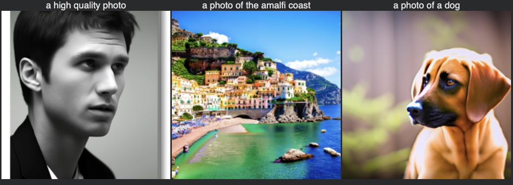
forward(im, t) • visualize noise levels
I implemented the forward process and confirmed that increasing the timestep adds more noise and slowly destroys structure.
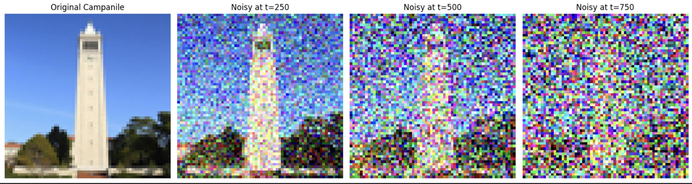
Gaussian blur reduces noise a bit, but it also wipes out edges/details, so it can’t truly “recover” the image.
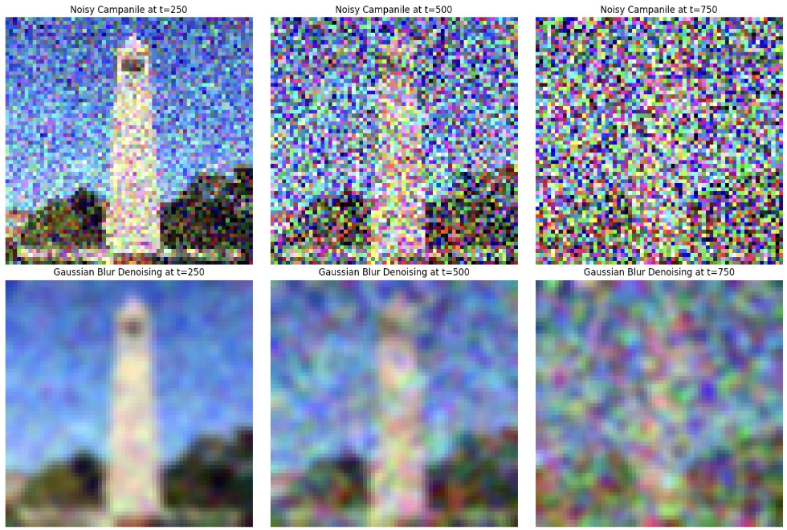
One-step UNet denoising helps a little at lower noise, but it’s still limited because it only does a single correction step.
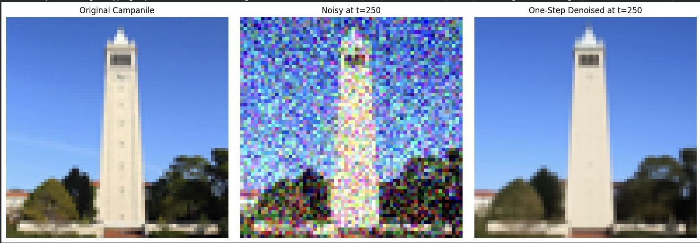
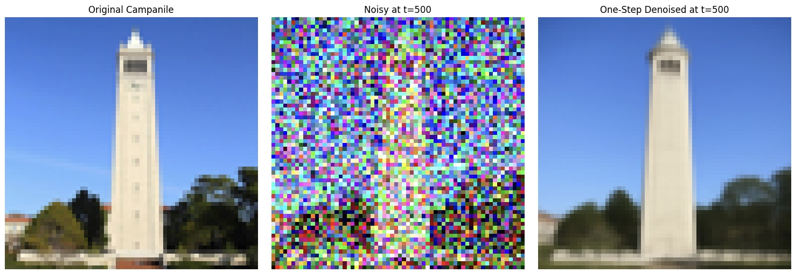
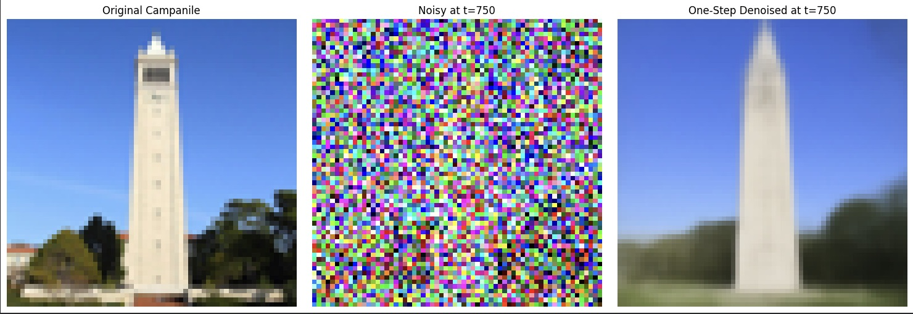
Iterative denoising works much better than one-step because each reverse step gradually pulls the image back toward a clean sample.
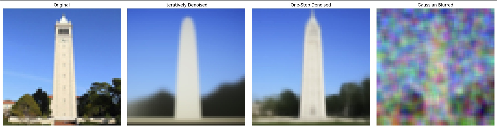
Unconditional sampling generates reasonable-looking images, but without a prompt it’s less controllable and more random.
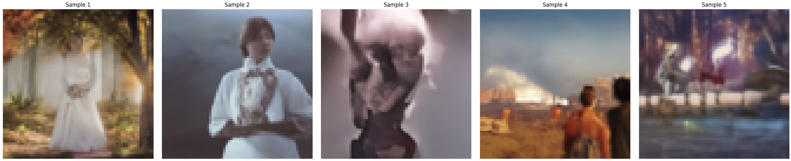
"a high quality photo"
CFG makes generations follow the prompt more strongly, but if the scale is too high it can introduce artifacts or over-sharpening.
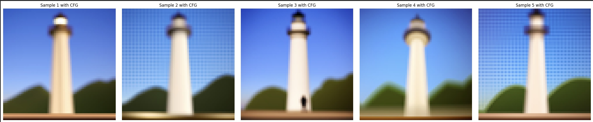
[1, 3, 5, 7, 10, 20]
Increasing the noise level gives the model more freedom to change the image, so edits become stronger but also less faithful to the original.
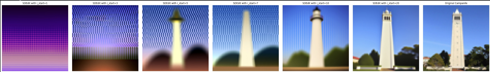
The same editing pipeline still works on a web image and drawings, but the results depend a lot on how much structure is in the input.
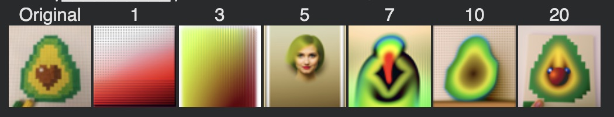
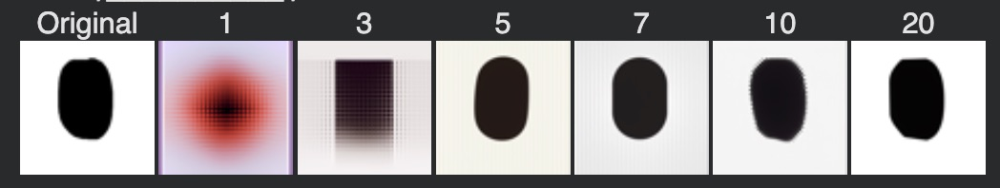
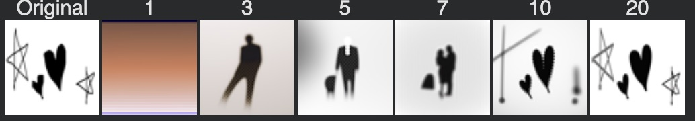
Inpainting replaces only the masked region while keeping the unmasked area consistent with the original image across diffusion steps.
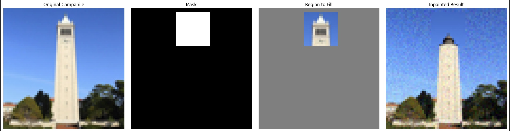
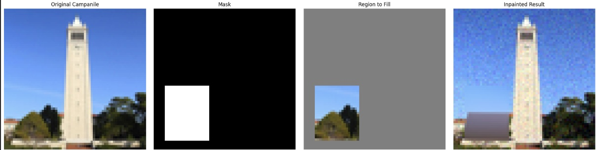
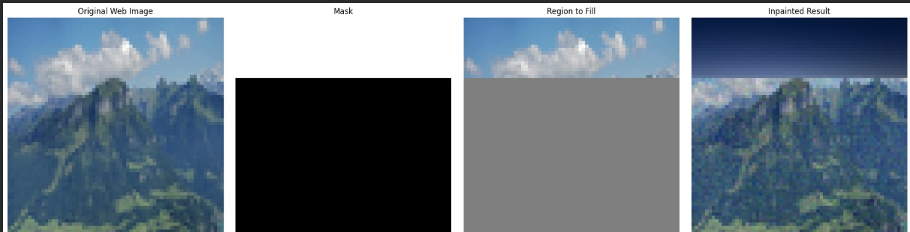
Text-conditioning pushes the edit toward the prompt while the noise level controls how much the original image gets preserved.
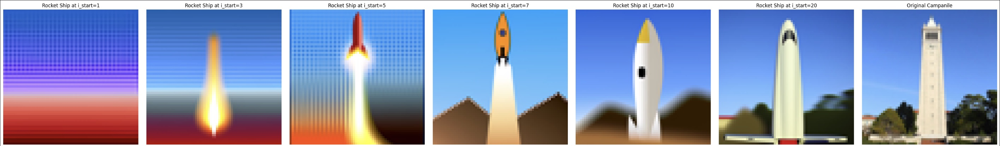
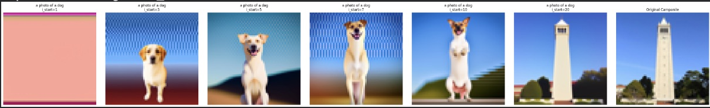
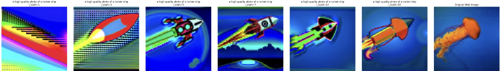
Visual anagrams work by combining two prompts’ denoising signals (upright vs flipped) so the image changes meaning when rotated.
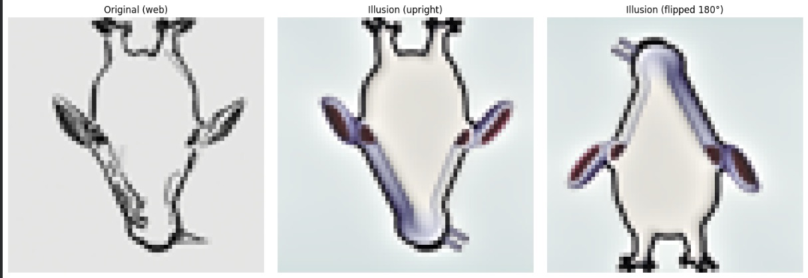
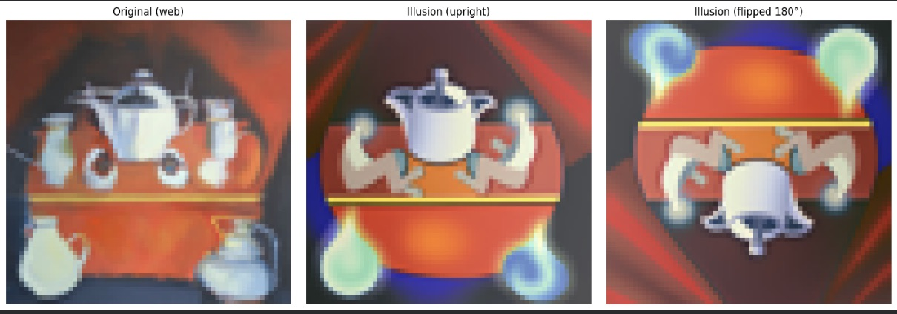
make_hybrids • 2+ hybrid images
I created hybrid images by mixing low-frequency information from one text prompt with high-frequency details from another during diffusion denoising. In practice, this ended up being really unstable and when the noise predictions from the two prompts disagree too much, the model often collapses into abstract textures instead of a clear image. Because of this, it usually takes multiple runs to get a hybrid that actually looks meaningful, which matches the warning in the assignment.
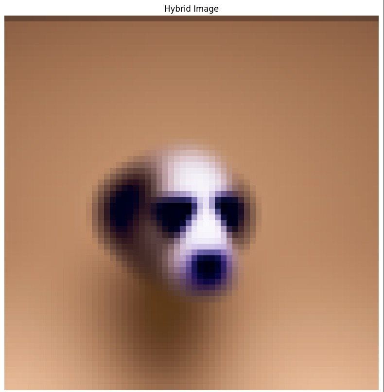
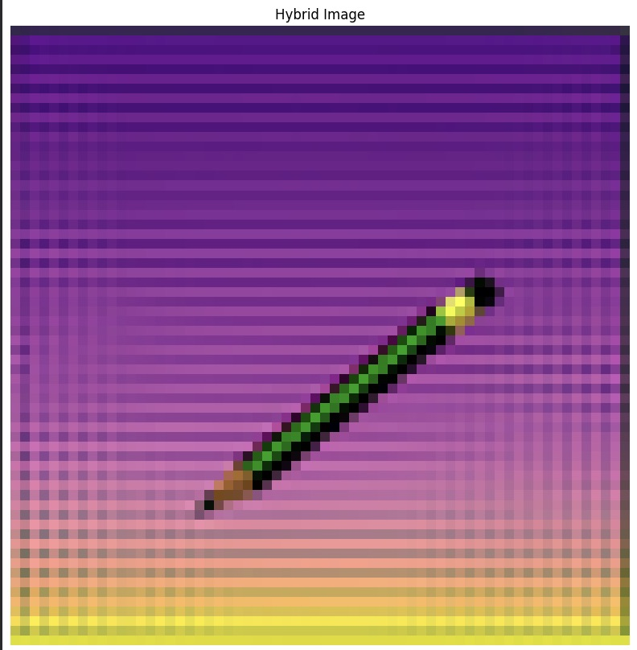
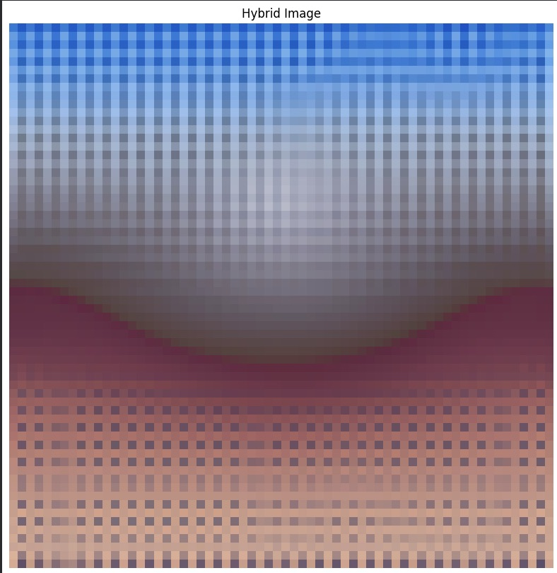
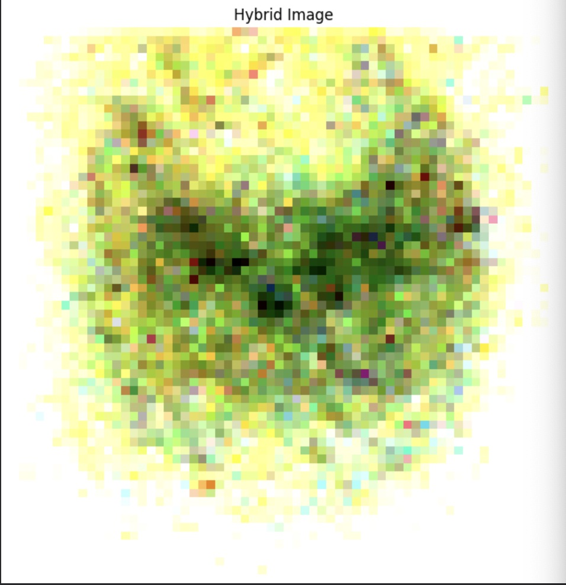
Overall, the biggest takeaway for me was that diffusion gives you a simple “knob” (noise level / guidance) that directly controls how much structure is preserved vs how creative the model can be, which shows up clearly in editing, inpainting, and anagrams.